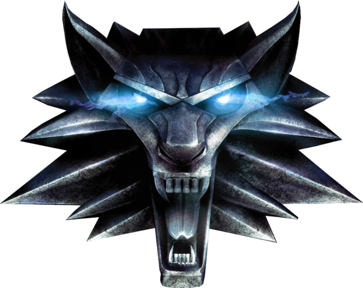
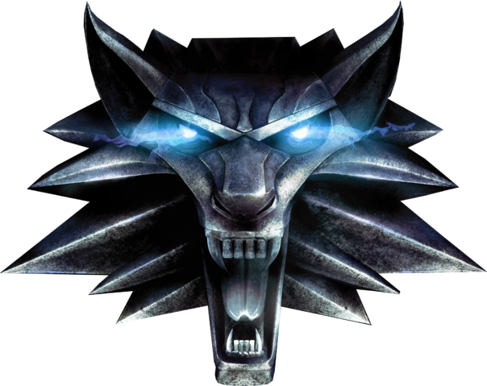
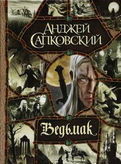

Выберите свой медальон
 

Немного о вселенной Ведьмака
Ведьмак (серия романов)
«Сага о ведьмаке» (польск. Saga o wiedźminie) — цикл книг польского писателя Анджея Сапковского в жанре фэнтези. Первый рассказ цикла увидел свет в 1986 году, а последняя книга — в 2013. По мотивам произведений был снят польский телесериал, а на данный момент в производстве находится сериал от Netflix, выпущены три игры для различных платформ («Ведьмак», «Ведьмак 2: Убийцы королей» и «Ведьмак 3: Дикая охота»), написана и поставлена рок-опера, а на родине писателя А. Сапковского издавались комиксы о похождениях Геральта и других героев его саги.
Сюжет
Главным героем серии является Геральт из Ривии, ведьмак — охотник за монстрами, представляющими угрозу для жизни людей. В детстве он, как и другие ведьмаки, подвергся мутациям, из-за которых получил высокие боевые качества: повышенная сила, быстрота реакции, ускоренный метаболизм. Основная работа Геральта — за деньги уничтожать опасных чудовищ.
В соответствии с собственным кодексом поведения, он старается не участвовать в политических интригах королей и чародеев, однако в итоге оказывается ввязан в сложный узел противостояния северных королевств и могущественной южной империи Нильфгаард. Геральт пытается защитить, юную княжну разрушенного королевства Цинтра, Цири (Дитя-Неожиданность), предназначенную ему ещё до её рождения. Цири становится средоточием интересов влиятельных сил (император Нильфгаарда, чародей Вильгефорц, Ложа чародеек), так как её потомку предсказано решить судьбу мира. Получив от своих приёмных родителей (Геральта и его возлюбленной, чародейки Йеннифэр) символические дары-умения: ведьмачье — владеть мечом и чародейское — магией, перетерпевшая в дальнейшем тяжёлые испытания, Цири становится наряду с Геральтом главным героем саги.
Особенности произведения
Цикл «Ведьмак» относится к поджанру «постмодернистского» фэнтези — направления, заметно отступающего по общей стилистике от «канонов» жанра, заданных произведениями в поджанре «эпического» фэнтези, и представляющего собой более жёсткую и натуралистичную разновидность. Автор сохраняет традиционные для фэнтези декорации в стиле европейского позднего средневековья. Однако образ мышления персонажей, их психология, переживания и мотивации зачастую умышленно противоречат окружению, в которое они помещены авторским замыслом, и соответствуют скорее нашим современникам. То же самое касается поднимаемых в произведении проблем и вопросов, вполне актуальных для современного читателя: прогресс и плата за него, давление цивилизации на окружающую среду, столкновение цивилизаций, расовая нетерпимость, геноцид.
Мир произведения по своей структуре напоминает Америку после первой волны европейской колонизации. Полоса суши, тянущаяся вдоль западного побережья континента, уже в достаточной степени заселена и обустроена, коренное местное население («нелюди») — принуждено к ассимиляции, загнано в резервации и гетто, либо вытеснено в горы и другие малопригодные для жизни места. Однако на карте всё ещё остаётся множество «белых пятен» — даже доходящая до жителей Запада информация о человеческих культурах Востока носит крайне фрагментарный характер.
В этом мире действует множество фракций — народов, рас, государств, организаций и тайных обществ, борющихся за свои, зачастую корыстные, интересы, причём отношения между ними и главными героями саги отличаются нестабильностью — бывшие союзники легко превращаются во врагов, и наоборот. Главные герои постоянно оказываются между двух огней, будучи вынужденными делать выбор в ситуациях, когда правильного пути и верного выбора просто не существует.
Автор отказывается от чёткого разделения на «чёрное» и «белое», скорее рисуя картину своего мира в различных оттенках серого, при этом нередко прибегая к натуралистичному описанию «тёмных» сторон жизни, жестокости, насилия, ксенофобии. В заключительных книгах цикла чётко прослеживается антивоенная риторика, отнюдь, однако, не сводящаяся к пацифизму и непротивлению злу.
Представленные в мире произведения нечеловеческие расы — эльфы, краснолюды, низушки (почему — см. «Бестиарий» Сапковского) — внешне соответствуют традиционным канонам фентези, однако их образы дополнены многими нехарактерными для жанра элементами. Так, эльфы — традиционно для фентези мудрые и доброжелательные долгожители — у Сапковского предстают как древняя, практически потерявшая способность к размножению и из-за этого вымирающая, раса самовлюблённых и высокомерных существ, по степени жестокости и ненависти к инородцам ничуть не уступающая людям, действия которой отличаются скорее изощрённым коварством, чем мудростью. Отряды эльфийских партизан-«белок» наводят ужас на крестьян, разрывающихся между страхом перед эльфами и страхом перед наказанием за помощь им.
В произведении присутствует ярко выраженная любовно-романтическая линия. Важная особенность — своеобразное чувство юмора, местами переходящее в отчётливую сатиру на злободневные проблемы современности. Автор широко использует традиционные мифологические и сказочные сюжеты, однако существенно переиначивает их, вплетая в канву повествования.